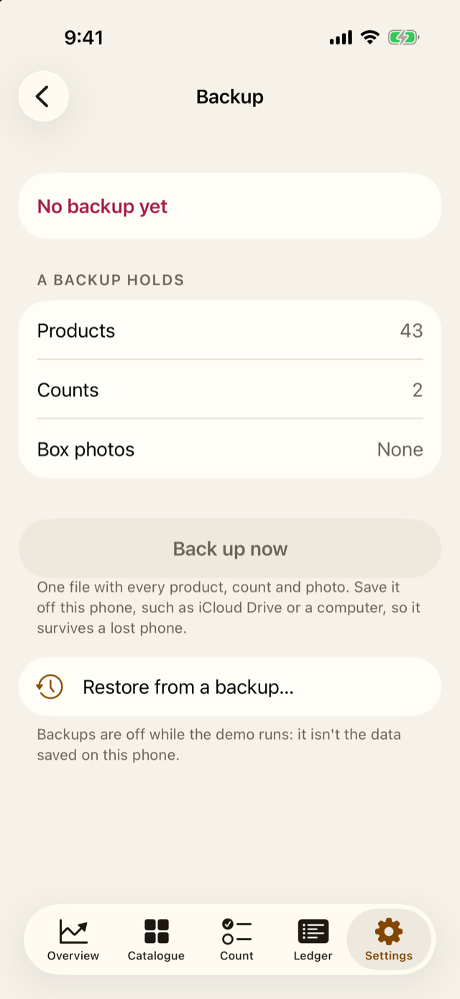

15 Keeping your data safe
For the owner
- Where Jholok keeps the shop’s data, and what a lost phone would cost.
- How to back up, and how to restore or move to a new phone.
- How Jholok keeps the data private, and what it does when something goes wrong.
15.1 The idea
Jholok keeps everything on the phone: the catalogue, every movement, every count, the activity log, product photos and box photos. Nothing is sent to a server or synced to the cloud. That keeps the shop’s stock and costs private, but it means the phone holds the only copy until you make a backup.
A backup is one file with everything in it. Saved somewhere other than the phone (iCloud Drive, a computer), it lets you get the shop back if the phone is lost, broken or replaced.
Jholok doesn’t back up by itself. Make it a habit: after every completed count, and at least once a week.
15.2 In the app
Back up
Open Settings, then Backup.
The top says when you last backed up, and some of what’s been added since (“Since then: 1 count completed and 14 box photos added”). A lost phone would lose those, and every sale, receipt and other entry made since too. A backup holds lists what goes in: products, counts, any count in progress, and box photos.
- Tap Back up now.
- Confirm it’s you, with Face ID or the owner PIN (until People is set up, Face ID or the phone’s passcode).
- Choose where to save the file, such as iCloud Drive in the Files list, or a folder that a computer collects. The file is called something like “Jholok backup 2026-10-09 1730.jholokbackup”.
The backup holds every product and photo, every count and movement, the activity log, the box photos, and the preferences (currency, appearance, lead time, book stock words and so on).
After a count is completed, its Result reminds you if it isn’t backed up yet: “This count is only on this phone until it’s backed up.” (Chapter 14)
Restore, or move to a new phone
To restore, open Settings → Backup, tap Restore from a backup…, confirm it’s you, and choose the backup file.
Before anything changes, Jholok shows the phone and the backup side by side: when the backup was made, and how many products, counts, counts in progress and box photos each has. It warns that everything on the phone will be replaced. If the phone has data, Back up this phone first saves it before you go on. Then tap Replace with backup.
To move to a new phone, back up on the old one, install Jholok on the new one, and restore the backup there. The lock setting and the shop’s name and address (Settings → Shop) aren’t in the backup: set them again on the new phone (Chapter 4).
Privacy
- The lock: Jholok asks for Face ID or the phone’s passcode when it opens and, by default, after a minute away; Settings → Security changes it (Chapter 4).
- The cover: whenever Jholok isn’t in front, a plain cover hides it from the list of open apps.
- The owner, every time: every export, backup, restore, report and box photo export asks the owner to confirm, with Face ID or the owner PIN (or the phone’s passcode, until People is set up).
- Nothing left behind: files made for sharing are deleted as soon as the share sheet closes, and any left over are deleted when Jholok opens.
Box photos and space
Box photos take space. Settings → Photo counting → Storage says how much, and can remove photos of counts completed over 12 months ago. Each box’s pieces and numbers stay; only the photos go.
15.3 Why it works this way
- On the phone, not in the cloud, so the shop’s stock and costs are seen only by the people who hold the phone.
- One file, so a backup is easy to save, copy and keep.
- Side by side before restoring, so nobody replaces new data with an old backup by mistake.
- The log remembers restores. After a restore, the log records it and where the log it replaced had got to. Going back to an older backup always shows.
- Exports ask every time, because once a file leaves the phone, Jholok can’t take it back.
15.4 How it works
Saving never fails silently
Every change is saved at once. If a save fails (most often because the phone is nearly full), Jholok puts everything back as it was, so the screen matches what’s stored, and says so: “The send out wasn’t saved, so it’s back as it was. If the phone is nearly full, free some space and try again.” A count whose completion fails stays open, with no stock changed.
If Jholok can’t open its data
If the data can’t be opened (after a failed update, say), Jholok doesn’t stop. It shows “Jholok can’t open its data”, and says nothing has been deleted. You can Try again, Restore from a backup…, or Save the data file…, which saves the raw data so it can be repaired. That file isn’t a backup and can’t be restored.
Restoring safely
Jholok first copies the backup next to your data, checks it and brings it up to date with the app. Only then does it replace your data. If the phone switched off part way, Jholok finishes the job the next time it opens. A backup made by an older version of Jholok is brought up to date as it’s restored. One made by a newer version can’t be restored until you update the app.
Diagnostics
Settings → Diagnostics, under About, keeps reports of crashes and hangs from iOS, and a log of what went wrong in the app, such as a failed save or a camera that stopped. It never records stock, products, prices or tags. Nothing leaves the phone unless the owner taps Share diagnostics, which makes one file to send to whoever supports the app.
15.5 Try it
Question. The shop’s phone is stolen. What do you need to get the shop back, and what would be lost?
TipAnswer
The latest backup file, saved off the phone. Install Jholok on a new phone and restore it. Everything entered since that backup would be lost: the counts, products and box photos in the Backup screen’s “Since then” line, and every sale, receipt and other entry too. That’s why it’s worth backing up after every count.
- The phone holds the only copy until you back up. Jholok doesn’t back up by itself.
- Back up after every completed count, and at least weekly, to iCloud Drive or a computer.
- Restoring shows the phone and the backup side by side first, and replaces everything.
- Every export and backup asks the owner, and shared files are deleted afterwards.